Years in hands-on Generative AI production
Image and video generation, iteration, consistency work and creative model testing.
I turn ideas into visual worlds—and carry them through to the final frame.
Creative development. Shot design. Reference systems. AI image and video production. The creative judgment to connect them all.
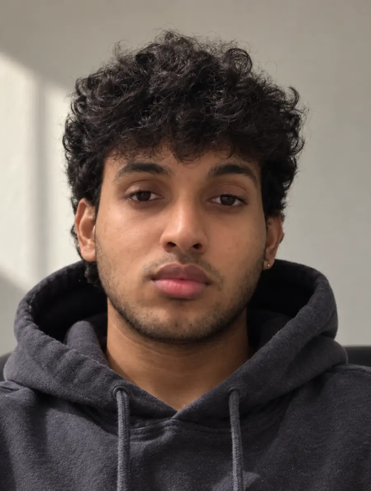
Not isolated generations. Repeatable creative production carried through to finished work.
Image and video generation, iteration, consistency work and creative model testing.
Structure, shot development, AI production, editorial, sound and final delivery.
Including end-to-end trailers and larger collaborative productions.
01 / INSIDE THE PROCESS
Five characters. Overlapping bodies. One shared space. A study in taking a difficult composition from shot breakdown to an 11-second AI-generated sequence.
Preserve identity, costume, expression and spatial relationships across a crowded scene.
Split the scene, generate each part, recombine the plates into a wide master, then direct the coverage.
Shot breakdown, storyboard direction, reference design, plate generation, prompt iteration and image-to-video direction.
SHOT BREAKDOWN → STORYBOARD
Before generating anything, decide where everyone belongs.
I broke the scene into dramatic beats and directed the storyboard layout. The artists kept our existing ferry prop reference in the sketch, giving the characters a shared stage with a clear camera angle.
UV is in distress at the centre. Shuki restrains him, Sunil and Nishi close in, and Badri’s attention eventually shifts to the mist overhead.
The same deck, railing and body placements become reference points for the later close-ups.
COMPLEXITY → FOCUSED REFERENCES
The full five-person sketch was not reliable enough as a direct generation input. I separated it into four focused layouts, keeping the boat and camera angle as a common reference.
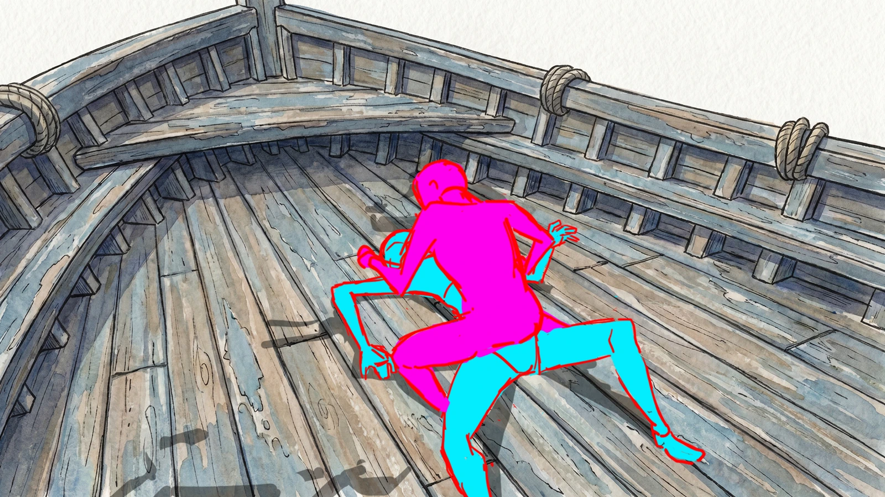
Reduce the number of things the model has to resolve at once, while retaining the scene’s shared composition.
ISOLATED LAYOUTS → GENERATED PLATES
The coloured layouts were maps—not finished images.
I used each isolated layout with the relevant character, prop and environment references to generate the scene in controlled pieces. This let me resolve identity, costume, pose and placement without asking the model to solve five interacting characters in one pass.
Night lighting · cold blue palette · crimson mist · one shared composition
Resolve the difficult parts independently, then use one final pass to unify cast, environment, lighting and atmosphere.
GENERATED PLATES + ART DIRECTION → MASTER IMAGE
I brought the four generated plates back together in a final image-generation pass, supported by the character, prop and ferry references. The lighting treatment and crimson mist were directed at this stage.
The result is a single wide master that holds all five characters and enough environmental information to guide scale, placement and tighter coverage through the video pass.
Deck, railings and cast placement establish the common geography.
Cel-shaded characters sit inside the painterly ferry environment.
That visual foundation supports the change from ensemble staging to close performance.
MASTER IMAGE + REFERENCES + DIRECTION
The master carries the geography. The supporting references carry the detail.
I used the master as the exact opening-frame instruction and primary composition reference, supported by individual character sheets and the ferry environment sheet.
The prompt then specifies camera coverage, acting, atmosphere and continuity across five timed story beats.
Keep the established viewing side, screen direction and subject scale readable through the cuts.
Panic → recognition → dread → protective concern → fading consciousness.
Stable identities, outfits, linework and light; clear expressions; no extra characters.
The brief is organised as a hierarchy: what each reference controls, what stays consistent, then what changes in each shot. These are directing instructions; the generated clip below is the resulting output.
DIRECTED COVERAGE → GENERATED SEQUENCE
Select a beat to play from that moment. Shot numbers follow the original scene breakdown; the opening block contains both a wide view and a close-up.
WHAT THIS DEMONSTRATES
A scene can be designed as a connected system.
The work was in the decisions connecting the stages: translating the scene into shots, reducing reference complexity, generating clean component plates, unifying them into a master composition, and directing the emotional progression across generated camera views.
02 / SELECTED FILMS
Trailers I owned through concept, structure, shot design, AI production, editing, sound and delivery.
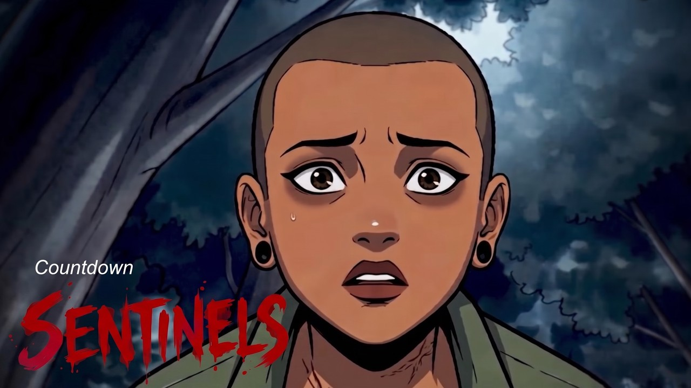
01Concept → AI production → final delivery
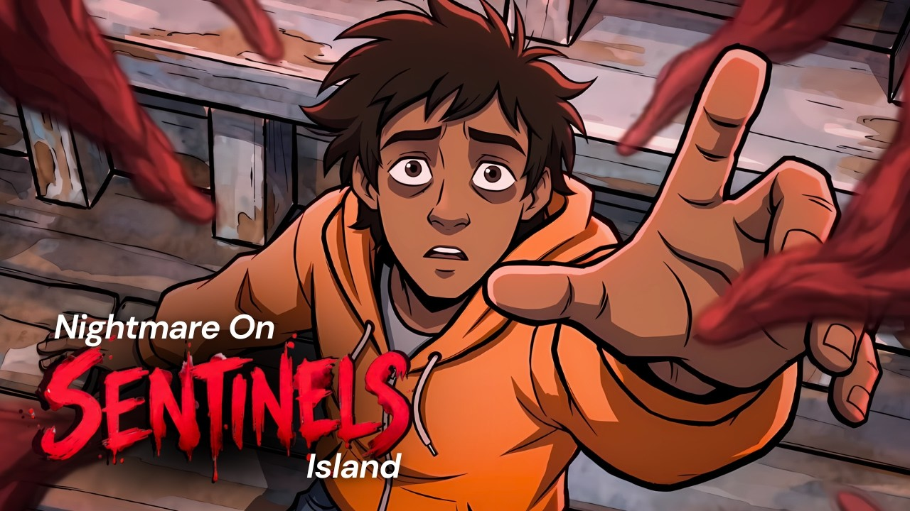
02Concept → AI production → final delivery
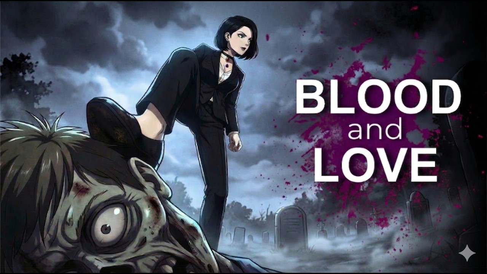
03Concept → AI production → final delivery
ADDITIONAL END-TO-END TRAILERS
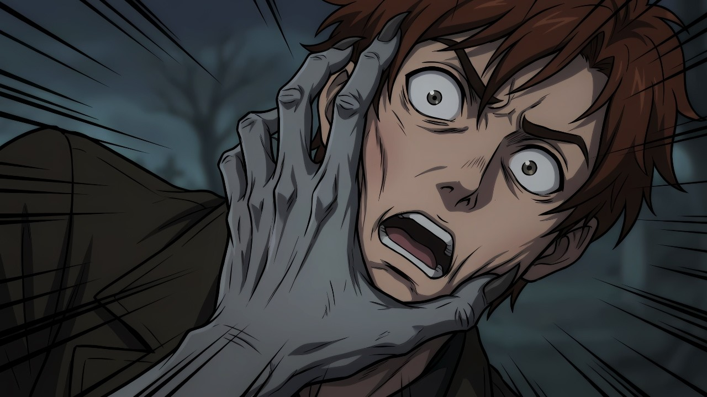
The Monster WithinSDF EP08 · Concept, AI production, edit & delivery↗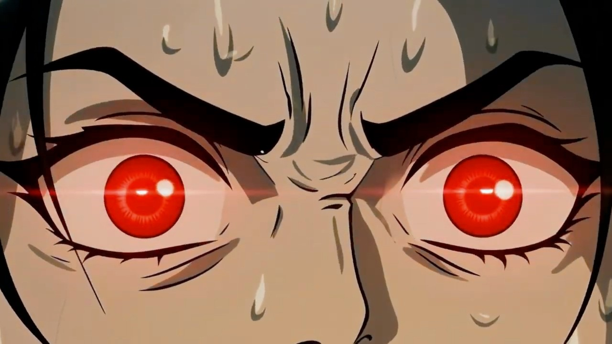
Maria Finally Stops Holding BackSDF EP06 · Concept, AI production, edit & delivery↗AI IMAGE & VIDEO CONTRIBUTIONS / COLLABORATIVE PRODUCTIONS
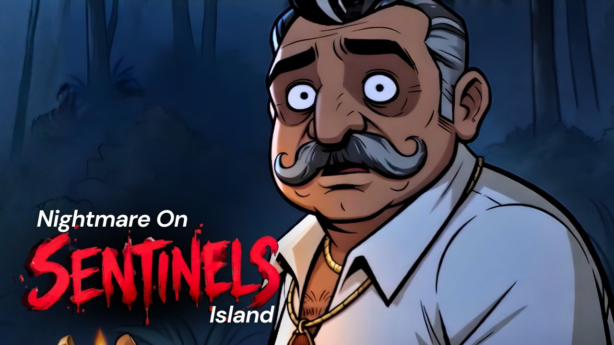
The Forbidden Island Woke Up. And It Took Someone.Sentinels EP02 · AI image / video contribution↗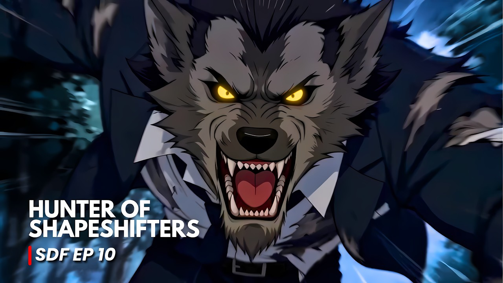
Evil Genius Hunting ShapeshiftersSDF EP10 · AI image / video contribution↗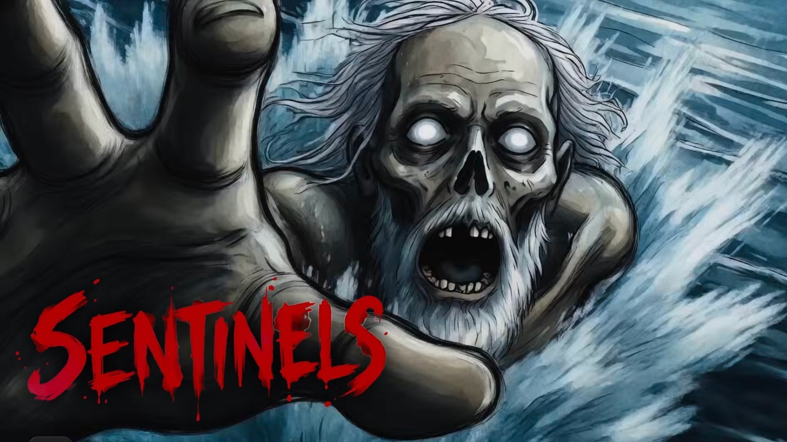
The Island That Feeds on FearSentinels EP01 · AI image / video contribution↗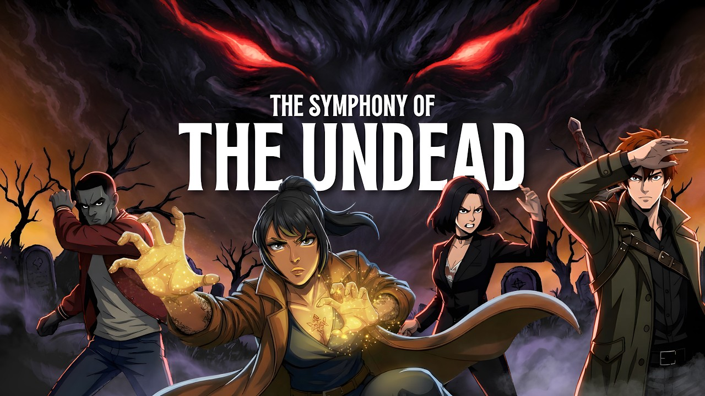
The Vetala Arc Is Where It All Broke DownSymphony of the Undead · AI image / video contribution↗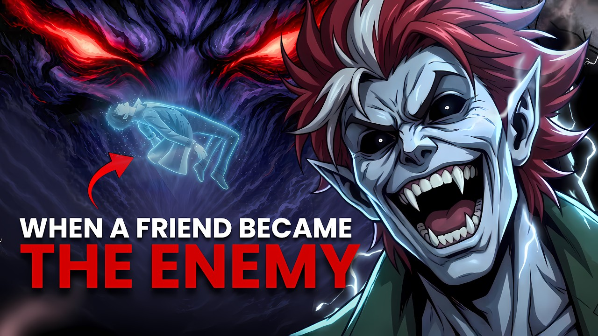
They Had To Choose Who To SacrificeSDF EP09 · AI image / video contribution↗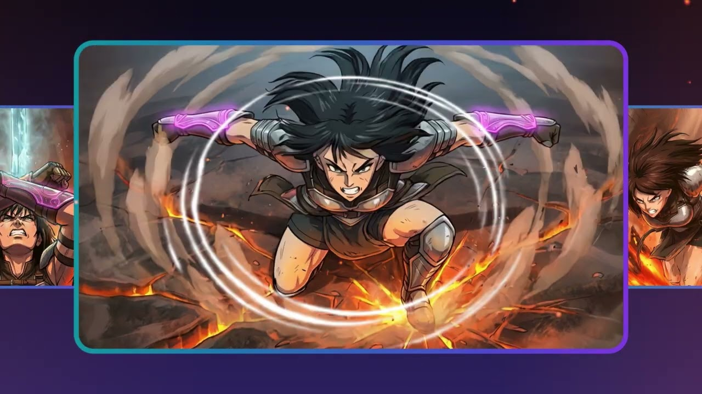
Bring Your Manga Stories to LifePromotional film · AI visual production contribution↗These collaborative productions include my AI image and video work. Full-production ownership is reserved for the five trailers listed above.
04 / WHAT I BRING
From the first visual decision to the last delivery detail.
Creative briefs, story structure, visual development, reference selection and shot breakdowns.
CONCEPT & DIRECTIONComposition, character consistency, prompt and reference design, and a workable generation strategy.
CREATIVE TECHNOLOGISTAI image and video production, performance and camera direction, output evaluation and iteration.
AI PRODUCTIONEditorial structure, pacing, sound, dialogue integration and delivery—built on 3+ years of post-production experience.
EDIT & DELIVERYSeedance · Nano Banana · Kling · Veo · ElevenLabs · Premiere Pro · Photoshop
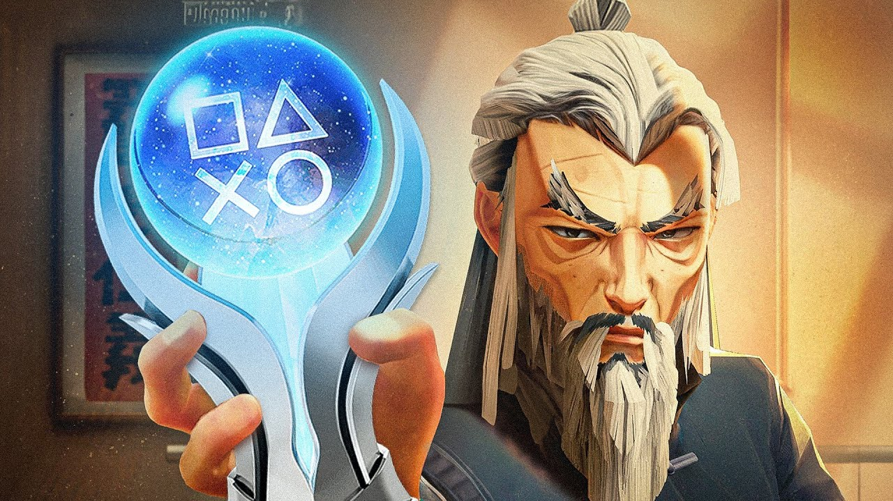
Long-form gameplay shaped into a clear YouTube narrative.
05 / THE PERSON BEHIND THE PROCESS
My foundation is in VFX, animation and editorial storytelling. My work today brings that craft into Generative AI production.
I develop shots, guide visual consistency, direct generated performances and build the final sequence through post-production. I also work with product and engineering teams to test creative AI tools and turn production friction into practical feedback.
BSc VFX & Animation · ITM University · 2024
More about my experience ↗OPEN TO REMOTE ROLES & CREATIVE COLLABORATIONS
AI films, visual worlds and production workflows with a clear creative point of view.
03 / SOCIAL STORYTELLING
AN ANNOUNCEMENT.
WITH AN ARC.
JADUQUEST 3 / WINNER REVEAL
Bring the same narrative thinking to a vertical screen.
I handled the reel’s edit from start to finish, shaping its opening hook, fast pacing, graphic emphasis and overall aesthetic into a finished social piece.
Open with intrigue and a reason to stay.
Make the announcement easy to understand.
Build emphasis around the key result.
Give the winning work room to land.
Close with a clear branded next step.
Execution notes+
Visual hierarchy: graphics and emphasis guide the eye on a phone screen. Rhythm: fast cuts, transitions and music-led pacing keep the information moving. Finishing: a coherent visual treatment connects the hook, reveal and branded ending.
This case study describes the creative structure and execution. The goal was to sustain attention through the announcement.